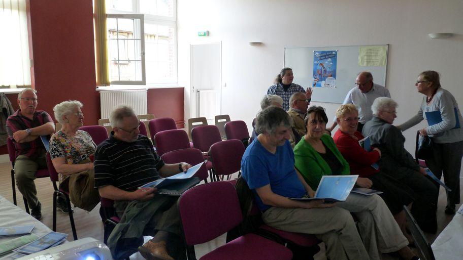

Jeudi 25 avril 2013
Assemblée Générale AMSAC-ASEF
Ce jeudi 25 avril s'est déroulée dans la salle du CCAS de la Mairie de Pavilly l'Assemblée Générale de nos deux structures.
En préambule, le Président a présenté les principaux chiffres résumant l'activité de chaque structure.
Un diaporama regroupant les rapports d'activité et financiers ainsi que l'habituelle
enquête de satisfaction a ensuite été déroulé par le trésorier de l'AMSAC.
L'ensemble des rapports a été approuvé par les membres présents.
Un verre de l'amitié a clôturé la manifestation.
AMSAC - L'activité 2012 en quelques chiffres
- 371 inscrits au 31 décembre
- 149 personnes mises à disposition (107 femmes et 42 hommes)
- 41 414,19 heures effectuées
Sur les 149 personnes mises à disposition, 15 sont sorties positivement : 1 CDI, 1 CDD de plus de 6 mois et 8 CDD de moins de 6 mois ou intérim ou contrats aidés, 3 entrées en formation et 2 personnes ayant fait valoir leurs droits à retraite
Les principaux objectifs de la CPO sur les sorties ont été atteints en pourcentage vis à vis du nombre de personnes mises à disposition.
AZEF - L'activité 2012 en quelques chiffres
- 78 personnes ont travaillé pour la structure (75 femmes et 3 hommes)
- 44 clients en contrat "mandat" et 133 en contrat "prestation" ont bénéficié
des services de l'ASEF.
- 14 569,77 heures effectuées en mandat et 16 411,20 heures en prestation.
- Janvier 2012 : Renouvellement de l'agrément qualité prestataire et mandataire de l'ASEF
- 23 Avril 2012 : Recrutement de Madame Adeline GAUDRAY au poste de secrétariat d'accueil
- Suivi du partenariat de formation pour les futurs acteurs de l'aide à domicile.


Dans la presse ...
- Courrier Cauchois du 3/05/2013